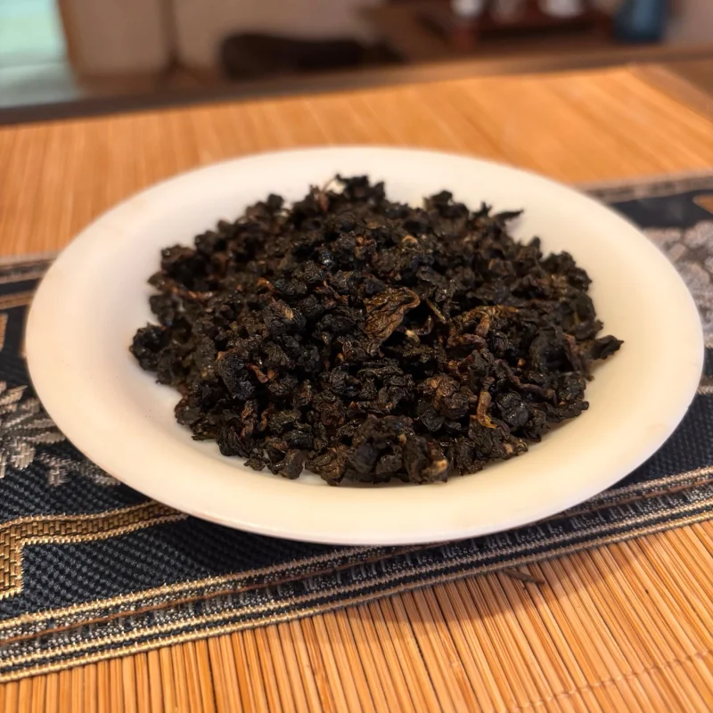
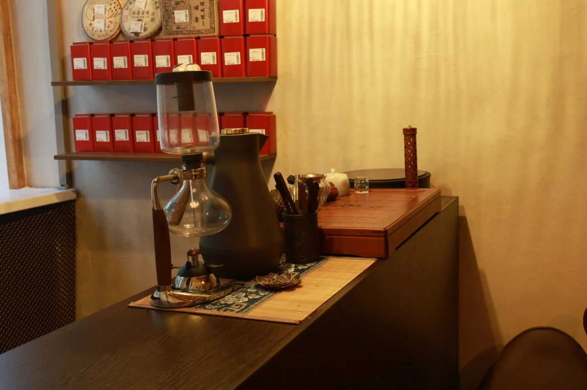
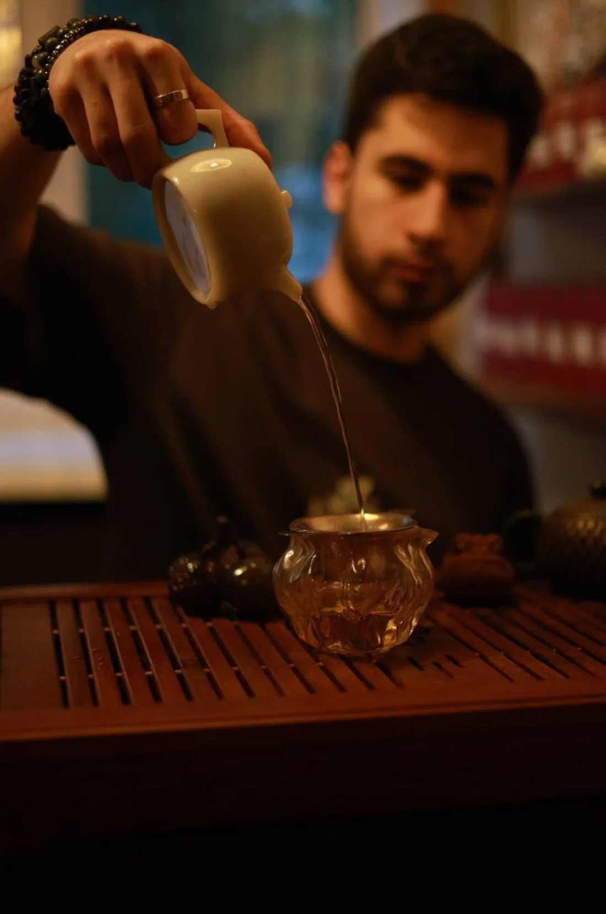

Working user journeys are live on chainya.ru in three languages.
E-commerce · local business · Moscow
Chainya — a digital system for a tea house
We connected an atmospheric storefront to everyday operations: tea and teaware, orders, two-table or whole-room booking, customer accounts, enquiries and owner tools — in Russian, English and Chinese.
 site is live
site is live3public interface languages: RU, EN and 中文
2 + roomtwo separate tables or the entire tea room
602text fields available in the owner site editor
5recent published versions can be restored
case status
open it nowA live commercial website
Release hashes, 32 public pages and assets, seven owner sections and editor journeys were checked separately.
The case makes no sales-growth claim; the dated verification did not simulate real payments, receipts or customer messages.
One brand, four reasons to visit
Each visitor starts with a distinct intent instead of decoding one long, universal page.

Retail
Choose tea for home
Catalogue, search, categories, favourites, pack sizes, stock and a cart.

In person
Book a table or the room
Two tables, the whole room, ceremony type, party size and free two-hour slots.

B2B
Discuss a supply
A separate path for cafés, restaurants and offices with a contextual owner enquiry.

Services
Ceremonies and repair
In-house and off-site ceremonies plus a separate teaware repair enquiry with a photo.
guest and team journey
From intent to an order, booking or enquiry
Different journeys converge on a server-verified action and a clear next step.
The guest chooses a goal
Shop for tea, book a table or room, request supply, invite a master or ask about repair.
The intent becomes concrete
The cart stores products and pack sizes; booking stores a date and time; enquiries keep their own context.
The server checks critical data
Prices and stock for orders, and conflict-free time slots for the two tables or whole room.
The guest gets a clear next step
Orders and bookings return to the account; Telegram can be connected as an additional access and notification channel.
Contents rechecked
The server revalidates products, prices and stock before checkout.
Time slot secured
The two-hour slot cannot overlap another booking.
Context reaches the team
B2B, event and repair requests remain distinct from the retail cart.
Interfaces from the live site
Fresh read-only screenshots contain no orders or personal data. The wide view shows the current catalogue; mobile shows the booking journey.
Open site ↗
Everyday owner operations
Change the site without a developer
The panel connects public content with operational areas. The owner can save a draft, open a private preview, publish changes and restore one of the five latest published versions.
- Three-language copy, images, contacts, documents and section order.
- Products, categories, prices, stock, partners and shared room photography.
- Prices and schedule for new ceremonies without recalculating existing orders.
- Separate areas for orders, bookings, customers, promos, B2B and repair enquiries.

How the system is connected
The architecture separates the public storefront, business-rule validation, storage and external channels.
Three languages
Catalogue, cart, booking, accounts and forms share one responsive web interface.
FastAPI
Validates prices, stock, booking slots, access rights and status transitions.
SQLite
One active writer, atomic updates, publication history and snapshots.
Bank, delivery, Telegram
Separate adapters for payment, delivery quotes, sign-in and notifications.
Migration without a second writer
On 13 October 2026 the live site and state moved to a separate Sprinthost X-4 account. This is shared hosting, not a dedicated VPS; the bot is hosted separately.
What this proves: transfer integrity, HTTPS, key-page availability and code rollback. What it does not prove: a real payment, fiscal receipt, delivered message or business uplift. Write operations were deliberately excluded from that acceptance check.
A dated, reproducible result
The published editor and connected server code were verified separately on 15 October 2026.
328 site and panel checks
Server rules, editor, draft, preview, publish, version restore and preservation of original settings were covered.
77 bot checks
A narrow display update for prices and schedule was verified separately; integration secrets and runtime state were not moved.
No silent data replacement
Publishing 33 files left the catalogue unchanged. Release hashes, public pages and private script access were checked afterwards.
In one Safari profile on 15 October, the home page opened without a warning while protection remained enabled and no bypass was used. This is a limited observation: global removal of the earlier label, its cause and the result on other devices are not proven.